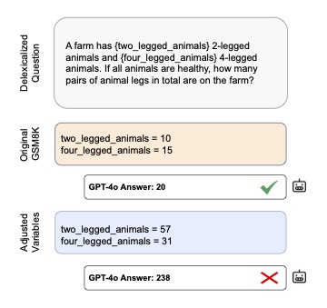

|
Xuanming (Billy) Zhang
Hello! My name is Xuanming (Billy) Zhang, a second-year PhD student in Computer Science at Columbia University. I am fortunate to be advised by Prof. Zhou Yu and Prof. Lydia Chilton. I'm happy to be part of the Columbia NLP Lab and the Computational Design Lab. My research interests center around Natural Language Processing, Dialogue Systems and Human-AI Interaction. My goal is to develop practical NLP-powered systems that can be broadly applied to assist human-AI collaboration.
Throughout my research journey, I am fortunately guided by so many awesome researchers and I really appreciate their help: Prof. Kathleen McKeown at Columbia University, Prof. Zhiyuan Liu in THUNLP at Tsinghua University, Prof. Vincent Ng at University of Texas at Dallas, Prof. Rahul Divekar at Bentley University, and Rutuja Ubale at ETS AI Labs.
Email /
Scholar /
Twitter /
Github
|
Photo credit: Shengyue Xiong
|
Publications
* denotes equal contribution.
|
|
|
JumpStarter: Getting Started on Personal Goals with AI-Powered Context Curation
Sitong Wang*,
Xuanming Zhang*,
Jenny Ma,
Alyssa Hwang,
Lydia Chilton
Under submission
[Paper]
[Video]
|
|
|
DECOR: Improving Coherence in L2 English Writing with a Novel Benchmark for Incoherence Detection, Reasoning, and Rewriting
Xuanming Zhang, Anthony Diaz, Zixun Chen, Qingyang Wu, Kun Qian, Erik Voss, Zhou Yu
EMNLP 2024
[Paper]
[Code]
|
|
|
ProLex: A Benchmark for Language Proficiency-oriented Lexical Substitution
Xuanming Zhang, Zixun Chen, Zhou Yu
ACL 2024 (Findings)
[Paper]
[Code]
|
|
|
GrounDialog: A Dataset for Repair and Grounding in Task-oriented Spoken Dialogues for Language Learning
Xuanming Zhang,
Rahul Divekar,
Rutuja Ubale,
Zhou Yu
The BEA Workshop @ ACL 2023
[Paper]
[Poster]
|
|

|
VarBench: Robust Language Model Benchmarking Through Dynamic Variable Perturbation
Kun Qian, Shunji Wan, Claudia Tang, Youzhi Wang, Xuanming Zhang, Maximillian Chen, Zhou Yu
EMNLP 2024 (Findings)
[Paper]
[Code]
|
|
|
MIRACLE: An Online, Explainable Multimodal Interactive Concept Learning System
Ansel Blume, Khanh Duy Nguyen, [et al., including Xuanming Zhang]
MM 2024
[Paper]
|
|
|
From Symbols to Embeddings: a Tale of Two Representations in Computational Social Science
Huimin Chen*, Cheng Yang*, Xuanming Zhang, Zhiyuan Liu, Maosong Sun, Jianbin Jin
Journal of Social Computing 2 (2), 103-156, IEEE, 2021
[Paper]
[Code]
|
Services
- ARR Reviewer: {Apr, Jun, Oct, Dec} 2024, {Feb, Apr, May} 2025
- Conference Reviewer: EMNLP {2022, 2023, 2024, 2025}, CHI {2024, 2025}, NAACL 2025, UIST 2025
|
|
{kind=link}